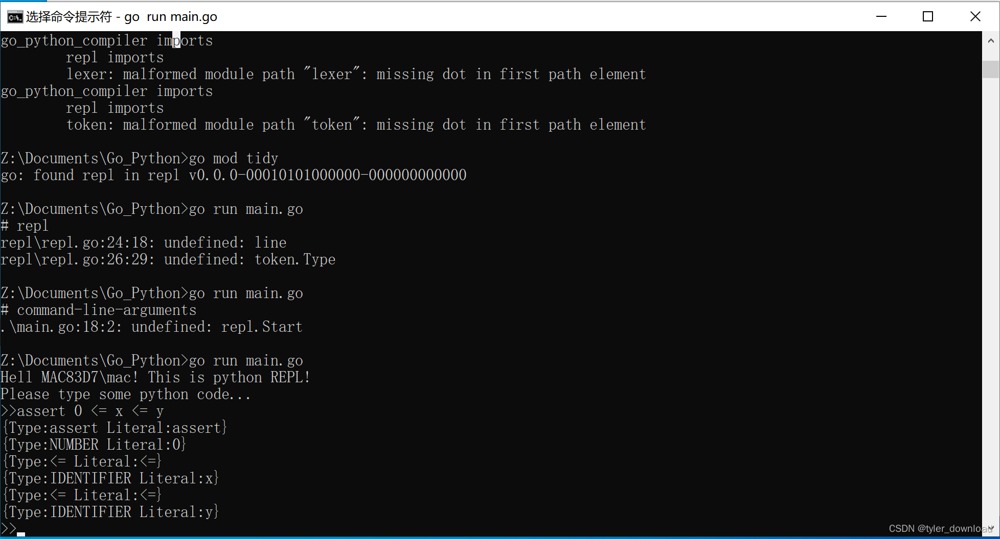

上一节完成的词法解析器存在一些明显问题，例如在识别数字时，面对字符串“123abc"，它会识别为两者情况，分别为NUMBER:123,然后是IDENTIFIER:anc,实际上这样的字符串应该被认为是语法错误。另外我们还有一些”连号“操作符没有处理，例如“==, !=, – ,++"等。
本节我们将在上一节的基础上对词法解析器做进一步完善。首先在token.go里面添加新的操作符定义：
···
const (
ILLEGAL = “ILLEGAL”
EOF = “EOF”
IDENTIFIER = “IDENTIFIER” //变量类型对应的归类
NUMBER = “NUMBER” //数值类型对应的归类
ASSIGN = “=” //赋值操作符
PLUS = “+” //加号操作符
LPAR = “(”
RPAR = “)”
LBRACE = “{”
RBRACE = “}”
COMMA = “,”
COLON = “:”
DEF = “def” //关键字
INT = “int”
RETURN = “return”
ASSERT = “assert”
AND = “and”
//第三节添加
TRUE = "True"
FALSE = "False"
IF = "if"
ELSE = "else"
EQUAL = "=="
NOTEQUAL = "!="
GREATEREQUAL = ">="
LESSEQUAL = "<="
MINUS = "-"
BANG = "!"
ASTERISK = "*"
SLASH = "/"
LT = "<"
GT = ">"
//第三节添加
)
var keywords = map[string]TokenType {
“def” : DEF,
“int” : INT,
“return” : RETURN,
“assert” : ASSERT,
“and” : AND,
//第三节添加
“if” : IF ,
“else” : ELSE,
“True” : TRUE,
“False” : FALSE,
//第三节添加
}
···
现在有关问题在于，有些操作符必须读取双字符才能认定，在lexer.go中的NextToken函数，它的switch只能接收单个字符，因此要识别">=", "!="等这些符号时，我们需要在读取到第一个字符时，还需要再读取下一个字符，这样获取到两个字符后才能做出判断，于是我们在lexer.go里面再添加一个函数：
func (l *Lexer) peekChar() byte {
if l.readPosition >= len(l.input) {
return 0
} else {
return l.input[l.readPosition]
}
}
当解析器读取到符号"=", “!”, “<”, ">"时，它还需要借助上面的函数获取下一个字符，这样才能决定当前遇到的操作符是哪一种，代码如下：
func (l *Lexer) NextToken() token.Token{//读取一个字符，判断是否属于特定分类
var tok token.Token
//忽略空格，回车，换行等特定字符
l.skipSpecialChar()
switch l.ch {
。。。。
//第三节添加
case '-':
tok = newToken(token.MINUS, l.ch)
case '*':
tok = newToken(token.ASTERISK, l.ch)
case '/':
tok = newToken(token.SLASH, l.ch)
case '=' :
if l.peekChar() == '=' {
//遇到==操作符
ch := l.ch
l.readChar()
tok = token.Token{Type: token.EQUAL, Literal: string(ch) + string(l.ch}
} else {
tok = newToken(token.ASSIGN, l.ch)
}
case '!':
if l.peekChar() == '=' {
//操作符!=
ch := l.ch
l.readChar()
tok = token.Token{Type: token.NOEQUAL, Literal: string(ch) + string(l.ch)}
} else {
tok = newToken(token.BANG, l.ch)
}
case '<':
if l.peekChar() == '=' {
//操作符!=
ch := l.ch
l.readChar()
tok = token.Token{Type: token.LESSEQUAL, Literal: string(ch) + string(l.ch)}
} else {
tok = newToken(token.LT, l.ch)
}
case '>':
if l.peekChar() == '=' {
//操作符!=
ch := l.ch
l.readChar()
tok = token.Token{Type: token.GREATEREQUAL, Literal: string(ch) + string(l.ch)}
} else {
tok = newToken(token.GT, l.ch)
}
。。。。
}
。。。。
}
现在我们可以再次完善用于测试的python代码，在lexer_test.go里面进行修改如下：
func TestNextToken2(t *testing.T) {
input := `
def add(x, y):
assert 0 <= x <= y
z = x + y
return z
`
tests := []struct {
expectedType token.TokenType
expectedLiteral string
} {
{token.DEF, "def"},
{token.IDENTIFIER, "add"},
{token.LPAR, "("},
{token.IDENTIFIER, "x"},
{token.COMMA, ","},
{token.IDENTIFIER, "y"},
{token.RPAR, ")"},
{token.COLON, ":"},
//第三节添加
{token.ASSERT, "assert"},
{token.NUMBER, "0"},
{token.LESSEQUAL, "<="},
{token.IDENTIFIER, "x"},
{token.LESSEQUAL, "<="},
{token.IDENTIFIER, "y"},
//第三节添加
{token.IDENTIFIER, "z"},
{token.ASSIGN, "="},
{token.IDENTIFIER, "x"},
{token.PLUS, "+"},
{token.IDENTIFIER, "z"},
{token.RETURN, "return"},
{token.IDENTIFIER, "z"},
}
l := New(input)
for i, tt := range tests {
tok := l.NextToken()
if tok.Type != tt.expectedType {
t.Fatalf("test[%d] - tokenType wrong. expected=%q, got=%q",
i, tt.expectedType, tok.Type)
if tok.Literal != tt.expectedLiteral {
t.Fatalf("tests[%d] - literal wrong. expected=%q, got=%q",
i, tt.expectedLiteral, tok.Literal)
}
}
}
}
执行go test后，可以发现上面用例可以通过，这意味着我们的词法解析请求已经能够识别比较复杂的python代码了。
有过Python开发经验的同学都知道，在命令号行窗口输入命令python后，我们可以进入一个互动环境，在里面可以直接输入代码，点击回车就能直接运行，现在我们也来实现这个功能。在根目录创建文件夹repl，然后在里面创建文件repl.go,然后输入代码如下：
package repl
import (
"bufio"
"fmt"
"io"
"lexer"
"token"
)
const PROMPT = ">>"
func Start(in io.Reader, out io.Writer) {
scanner := bufio.NewScanner(in) //从控制台获取输入
for {
fmt.Printf(PROMPT)
scanned := scanner.Scan() //点击回车后返回输入内容
if !scanned {
return //没有输入内容
}
lien := scanner.Text() //当前输入的内容
l := lexer.New(line)
for tok := l.NextToken(); tok.Type != token.EOF; tok = l.NextToken() {
fmt.Printf("%+v\n", tok) //输出解析的结果
}
}
}
接下来我们把main.go的内容输入如下：
package repl
import (
"bufio"
"fmt"
"io"
"lexer"
"token"
)
const PROMPT = ">>"
func Start(in io.Reader, out io.Writer) {
scanner := bufio.NewScanner(in) //从控制台获取输入
for {
fmt.Printf(PROMPT)
scanned := scanner.Scan() //点击回车后返回输入内容
if !scanned {
return //没有输入内容
}
line := scanner.Text() //当前输入的内容
l := lexer.New(line)
for tok := l.NextToken(); tok.Type != token.EOF; tok = l.NextToken() {
fmt.Printf("%+v\n", tok) //输出解析的结果
}
}
}
上面代码运行后结果如下：

可以看到，我们当前完成的工作还真有一点Python编译环境的味道。完整代码请点击这里{https://github.com/wycl16514/-GO-python-REPL.git}